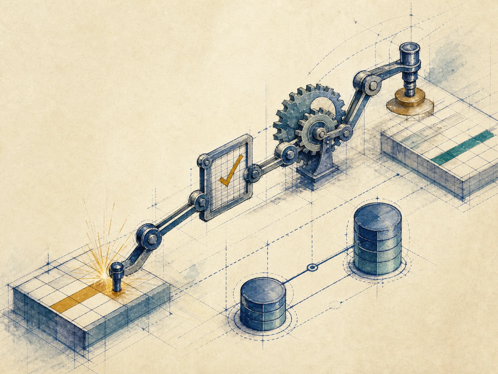

事件
SC 的行更新

让数据库服务器按规则自动响应数据变化
 VER. 2610
Built with impress.js
VER. 2610
Built with impress.js
成绩更新中的触发条件、日志写入与失败结果
本例仅在旧成绩大于 0 且相对增幅至少 10% 时记日志；零基数变化另行处理
SC 的行更新
旧成绩 60，新成绩 70；70 ≥ 1.1 × 60，条件为真
条件成立时，向 SC_U 写入学号、课号、旧成绩与新成绩
0→0 不算提高；0→10 不套用本例的相对增幅规则
SC_T 监测 SC 的行更新，将符合条件的变化写入 SC_U
| 要素 | 作用 | 本例 |
|---|---|---|
| 名称、目标表 | 标识规则与目标表 | SC_T，ON SC |
| 事件、时机 | 指定数据操作与执行阶段 | AFTER UPDATE |
| 粒度 | 指定调用单位 | FOR EACH ROW |
| 引用与条件 | 读取行值、判断条件 | 比较 OLD 与 NEW |
| 动作体 | 执行自动操作 | 向 SC_U 插入记录 |
本节运行行级触发器；语句级与 WHEN 只作概念比较
同一事件可分别定义 BEFORE 和 AFTER，一次操作可能经过两个阶段
在 INSERT／UPDATE 写入前检查或调整 NEW，例如将低于 4000 的工资补足；也可拒绝操作
行操作成功后执行，例如记录旧值与新值
插入：NEW
更新：OLD／NEW
删除：OLD
AFTER 属于语句执行阶段；事务型表上的变化在提交前仍可回滚
假定语句成功完成，恰好处理 100 行，且只统计指定的这一个触发器
01
02UPDATE SC SET Grade = Grade + 1
WHERE Cno = 'C01';| 粒度或动作 | 次数 | 依据 |
|---|---|---|
| 行级触发器 | 100 | 每个受影响行调用一次 |
| 语句级触发器 | 1 | 支持该粒度的系统按语句调用 |
| 条件成立后的日志插入 | 0—100 | 满足增幅条件的行数 |
语句中途失败时，调用次数按实际执行进度计算
下载触发器练习包：使用独立空库；起始 SC 只有 S01/C01 的 60 分记录
01
02
03
04
05CREATE TABLE SC_U (
Sno CHAR(8) NOT NULL, Cno CHAR(5) NOT NULL,
OldGrade SMALLINT NOT NULL,
NewGrade SMALLINT NOT NULL
);两表使用事务型引擎；包内含客户端分隔符与结果记录表
本例只记录旧值大于 0 的相对增长；NULL 与零基数不会进入日志
01
02
03
04
05
06
07
08CREATE TRIGGER SC_T AFTER UPDATE ON SC FOR EACH ROW
BEGIN
IF OLD.Grade > 0
AND NEW.Grade >= 1.1 * OLD.Grade THEN
INSERT INTO SC_U(Sno, Cno, OldGrade, NewGrade)
VALUES (OLD.Sno, OLD.Cno, OLD.Grade, NEW.Grade);
END IF;
END;预测 60→65、60→66 与 0→0 的日志结果；完整脚本见练习包
各行独立测试；IF 仅接受 TRUE，NULL 比较产生 UNKNOWN
| 变化 | 条件判断 | SC_U 新增行 |
|---|---|---|
| 60 → 65 | 增幅不足 10% | 0 |
| 60 → 66 | 恰好提高 10% | 1 |
| 60 → 70 | 增幅超过 10% | 1 |
| 0 → 0 或 0 → 10 | OLD > 0 不成立 | 0 |
| NULL → 70 | 条件不是 TRUE | 0 |
| 只改 Note，仍为 60 分 | 60 < 1.1 × 60 | 0 |
从 60 分、空日志开始；下面显示提交前在本会话中的预期结果
01
02
03
04START TRANSACTION;
UPDATE SC SET Grade=70 WHERE Sno='S01' AND Cno='C01';
SELECT * FROM SC;
SELECT * FROM SC_U;| 对象 | 更新前 | 更新后 |
|---|---|---|
| SC 的 S01/C01 | Grade = 60 | Grade = 70 |
| SC_U | 空表 | (S01,C01,60,70) |
查询后执行 ROLLBACK，两表恢复更新前的状态
拟写入 3000；A 补足至 4000，B 增加 10%，两者都修改 NEW
| 执行顺序 | 第一步 | 第二步与最终值 |
|---|---|---|
| A → B | 3000 → 4000 | 4000 × 1.1 = 4400 |
| B → A | 3000 × 1.1 = 3300 | 3300 → 4000 |
A→B 得到 4400，B→A 得到 4000；同类触发器的排序方式由 DBMS 规定
两表均为事务型表，初始成绩 60、日志为空；日志新值临时限制为不超过 65
01
02
03
04ALTER TABLE SC_U ADD CONSTRAINT CK_Log_Test
CHECK (NewGrade <= 65);
UPDATE SC SET Grade = 70
WHERE Sno = 'S01' AND Cno = 'C01';| 检查位置 | 发生什么 | 本模型预期 |
|---|---|---|
| SC_T | 满足增长条件，尝试写日志 | 新日志值为 70 |
| SC_U | 违反测试约束，插入失败 | 日志仍为空 |
| 原 UPDATE | 本语句一起失败 | SC.Grade 仍为 60 |
本例删除 SC_T；保留 SC 与 SC_U 中已提交的数据
01DROP TRIGGER IF EXISTS SC_T;删除范围仅限 SC_T；SC_U 上的其他触发器仍保留
声明式约束规定合法数据；触发器执行日志记录、数值修正等自动动作
| 需求 | 优先机制 | 判断要点 |
|---|---|---|
| 范围、非空、唯一 | CHECK、NOT NULL、UNIQUE | 直接声明合法状态 |
| 主码与引用 | PRIMARY KEY、FOREIGN KEY | 交给 DBMS 原生检查 |
| 记录变化历史 | AFTER 触发器 | 比较并记录 OLD／NEW |
| 写入前修正值 | BEFORE 触发器 | 明确 NEW 最终应取什么值 |
| 复杂跨表联动 | 触发器或显式流程 | 核对依赖、回滚与耗时 |
分析 60→70、批量更新 100 行、成绩限于 0—100、日志拒绝 70 四种情形
AFTER UPDATE 行级触发器读取 OLD／NEW；旧值大于 0 且增幅至少 10% 时，写入 SC_U
语句成功处理 100 行时，行级触发器调用 100 次；日志条数等于满足增幅条件的行数
由 DBMS 按 CHECK 检查成绩范围
SC_U 违反测试约束，原 UPDATE 失败；本例两表均为事务型表，成绩仍为 60，日志为空